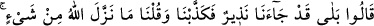
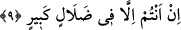
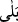

kullanılır ve Tâcu’l-masadır’ın ifâdesine göre bu fiiller iki mef’ûl alırlar.
9. Onlar şöyle cevap verirler: Evet, doğrusu bize, (bu azap ile) korkutan bir
peygamber gelmişti; fakat biz (onu) yalan saymış ve: Allah’ın bir şey gönderdiği
yok; siz olsa olsa büyük bir sapıklık içindesiniz! demiştik.
“Onlar şöyle cevap verirler:” İtirâf ederek “Evet, doğrusu bize, (bu azap ile)
korkutan bir peygamber gelmişti” derler. Bunlar, Allah Teâlâ’nın peygamber
göndermek sûretiyle kendilerinin ellerinden her türlü bahâneyi çekip aldığını itirâf
ederler. Bu peygamberler, şu anda içine düştükleri durum hakkında onları uyarmıştır.
Onlar şimdi hem bu uyarıyı hem de oraya cebriyecilerin iddiâ ettikleri gibi ilâhî
takdîrin zorlamasıyla gelmediklerini itirâf ederler. Oraya kendi amelleri ve kendi
arzuları ile gelmiş olduklarını, Allah Teâlâ’nın tercihinin bu olmadığını, Allah’ın bunun
aksini emrettiğini ve emrine aykırı davrananı tehdid ettiğini itirâf ederler.
“Belâ” edâtı, olumsuz şekilde sorulan soruya olumlu cevap vermek için kullanılır.
Burada görüldüğü üzere kâfirler cevap edâtı olan
ile “korkutan bir peygamber
gelmişti” cümlesini birlikte ifâde ediyorlar. Böylece onlar, itirâflarında bir mübâlağa
ve pekiştirme yapmış oluyorlar. Ayrıca bu cümle, peygamberi tasdik mutluluğunu elden
kaçırmalarından dolayı geçirdikleri iç yangısının şiddetini de ifâde etmiş oluyor. Ayrıca
bu cümle ile onların kusurlu davrandıklarını beyâna bir giriş sağlanmış oluyor. Yâni bu
topluluklardan her biri: “Bize gerçekten ya da hükmen bir uyarıcı peygamber gelmişti”
diyecekler. “Hükmen” dememiz, İsrailoğulları peygamberleri örneğine göredir. Çünkü
onlar, hükmen bir uyarıcı idiler. İtirafçılar, “bu peygamberler bizleri uyardılar, bizlere
Allah’ın kendilerine indirmiş olduğu âyetleri okudular” diye itirâf edeceklerdir.
Ebû Hüreyre (r.a.)’ın rivâyetine göre Peygamber Efendimiz (s.a.) şöyle buyuruyor:
“Ben nezirim; yâni uyarıcıyım, ölüm ise değiştiricidir. Kıyâmet günü vaad edilen
gündür.” [13]
“Fakat biz (onu)” yâni bu uyarıcının Allah Teâlâ tarafından gelen bir uyarıcı
olduğunu “yalan saymış ve Allah’ın” kimseye hiç “bir şey indirdiği yok; siz olsa
olsa” haktan uzak “büyük bir sapıklık içindesiniz demiştik.”
Burada sözü geçen ifâde göz önüne alınacak olursa “günahlarında ısrarlı olan fâsıkın
cehenneme girmemesi gerekir. Çünkü o, uyarıcı olan peygamberi yalanlamış değildir”
şeklinde yapılabilecek bir itirâza şöyle cevap vermek mümkündür: Nakli deliller âsî
olanların azap göreceklerini mutlak biçimde ifâde ediyorlar. Âyette yer alan fevc
kelimesinden maksad, cehenneme atılanların bir kısmıdır ki bunlar yukarda işâret
olunduğu üzere kâfirlerdir. Bu kâfirler peygamberlerin okuduğu âyetler hakkında